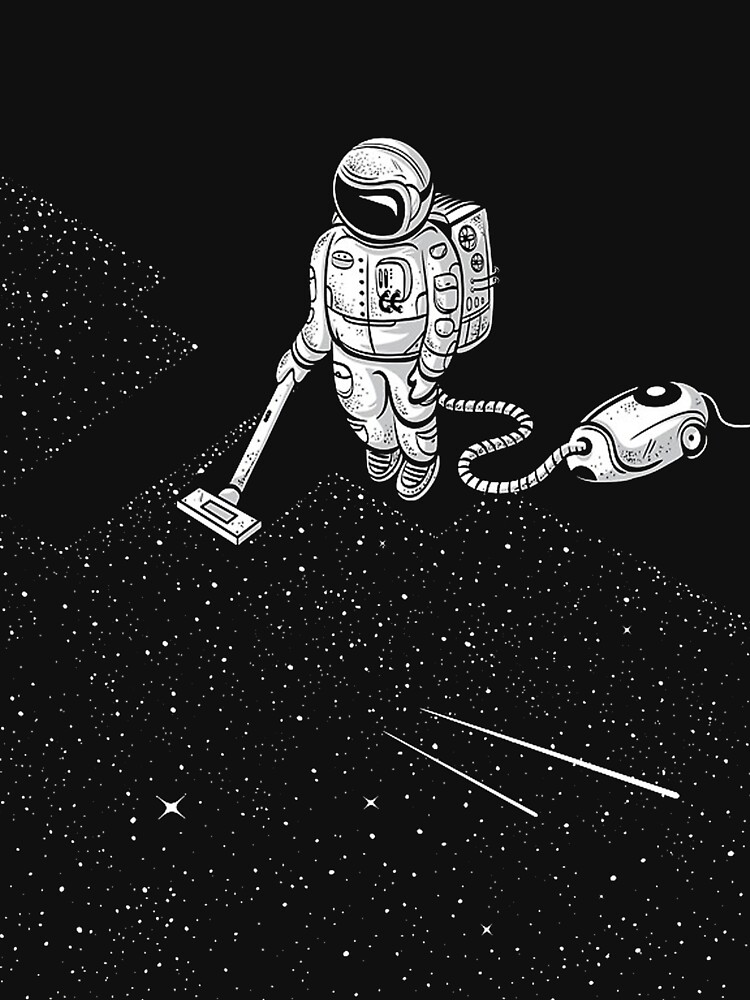

Angel (Ttecho)
Everything about Programming, Nix, & Music

Hi 👋, I am a musician, developer, and lover of biking. I have a lot of hobbies that mostly revolve around music, technology, or exercise. I want to welcome you to blog that I write and research about various things, I am trying to learn. I am also trying to write similarly to Journalling but in an online form.
If you stumbling upon this thank you and hopefully this has something for you to learn
about.
Lets chat on what ever interests you as well. My socials are below to ping me on.
I am always looking into new ventures, please reach out if you have some cool projects that I can help out with.